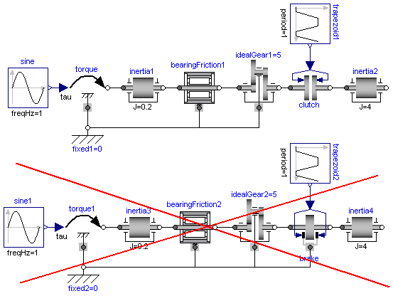

RequirementsForSimulationToolRequirements for Simulation Tools |
|
Information
This information is part of the Modelica Standard Library maintained by the Modelica Association.
This library is designed in a fully object oriented way in order that components can be connected together in every meaningful combination (e.g., direct connection of two springs or two inertias). As a consequence, most models lead to a system of differential-algebraic equations of index 3 (= constraint equations have to be differentiated twice in order to arrive at a state space representation) and the Modelica translator or the simulator has to cope with this system representation. According to our present knowledge, this requires that the Modelica translator is able to symbolically differentiate equations (otherwise it is e.g., not possible to provide consistent initial conditions; even if consistent initial conditions are present, most numerical DAE integrators can cope at most with index 2 DAEs).
The elements of this library can be connected together in an arbitrary way. However, difficulties may occur, if the elements which can lock the relative motion between two flanges are connected rigidly together such that essentially the same relative motion can be locked. The reason is that the cut-torque in the locked phase is not uniquely defined if the elements are locked at the same time instant (i.e., there does not exist a unique solution) and some simulation systems may not be able to handle this situation, since this leads to a singularity during simulation. Currently, this type of problem can occur with the Coulomb friction elements BearingFriction, Clutch, Brake, LossyGear when the elements become stuck:

In the figure above two typical situations are shown: In the upper part of the figure, the series connection of rigidly attached BearingFriction and Clutch components are shown. This does not hurt, because the BearingFriction element can lock the relative motion between the element and the housing, whereas the clutch element can lock the relative motion between the two connected flanges. Contrary, the drive train in the lower part of the figure may give rise to simulation problems, because the BearingFriction element and the Brake element can lock the relative motion between a flange and the housing and these flanges are rigidly connected together, i.e., essentially the same relative motion can be locked. These difficulties may be solved by either introducing a compliance between these flanges or by combining the BearingFriction and Brake element into one component and resolving the ambiguity of the frictional torque in the stuck mode. A tool may handle this situation also automatically, by picking one solution of the infinitely many, e.g., the one where the difference to the value of the previous time instant is as small as possible.